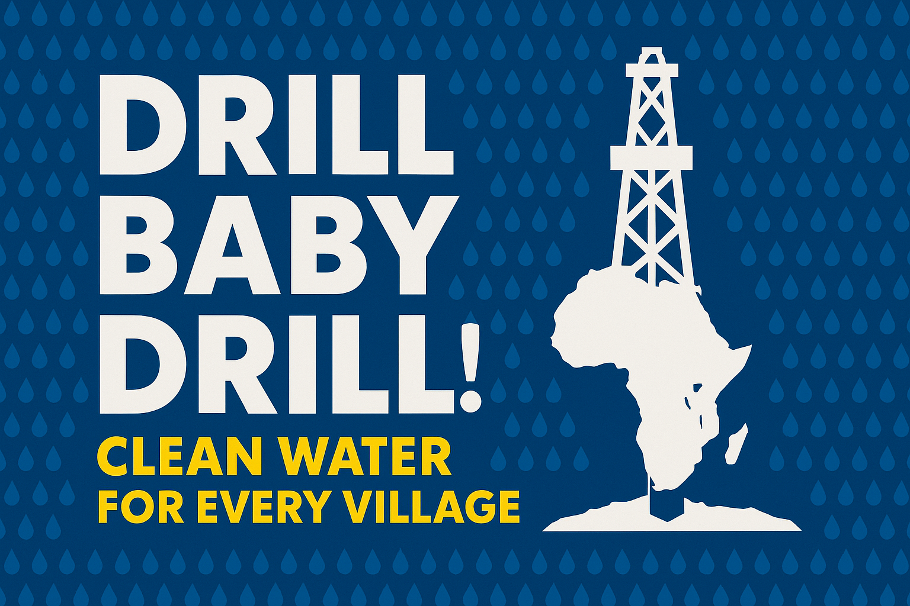
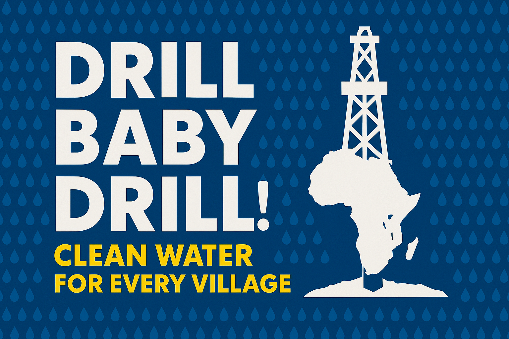

About Me

Vision & Drive
My work is about more than technology — it’s about creating hope. I believe technology should serve people, not the other way around. Every project I build is guided by love, fairness, and compassion.
Example Project: Fatimah Support
One of my ongoing humanitarian projects is Fatimah Support — a site built to help a woman in Ghana receive food and basic support through direct donations.
Visit Fatimah Support →(my latest project)
Future Projects
Current focus: expanding BAUTA projects in Africa — including free hospitals, medicine factories, microloan banks, and renewable energy hubs. Motto: "Free of charge — for Africa."
 
